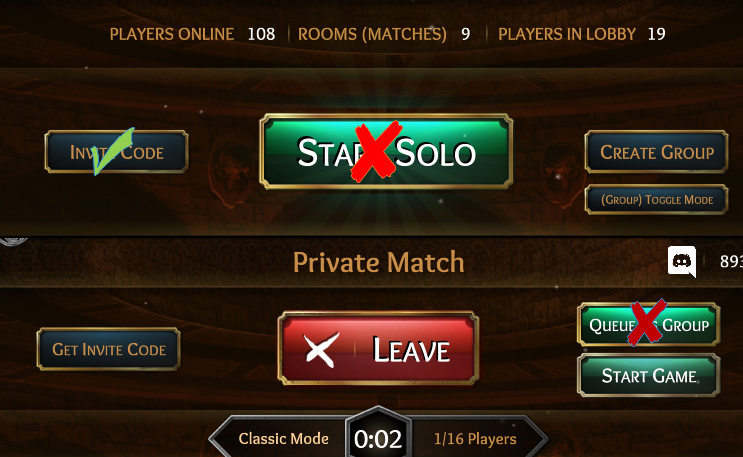

-what is it?-
ToL demo is a way to play this game for free with limited options that will tease players and give basic idea of how this game works
-How It Works?-
Demo is diffrent game version that makes players unable to join public games via “Start solo” button and “queue as grop” both when they are making games or they are themselves being invited to private lobby by someone who is making group on their standard game copy.
This game version will allow joining to custom games but matchamking will be blocked. tutorial game should be available aswell.
-Purpose-
Goal of making this is to make a way to attract more new players, and allow small streamers to play with their viewers who do not own this game.
This game version should NOT affect main playerbase in any way - splitting it or making it more toxic.
-Threats-
It’s very likely that this version will not give players proper game expierience
-opportunities-
more players who never played such games before, more stream viewers and packs of friends who like to play together amd are looking for a geme they can play with 5+ players without forcing everyone to spend money.
-Should it be classic, standard or both modes?-
I dunno it’s up to devs

/support
it’s actually a pretty good start to attracting more players for a honestly dying game.
this game is nothing without a playerbase.
I don’t feel this is the right way to do it. This game has plenty of new players coming in right now, they need some sort of helpful tutorial to teach them how to play.
then add the tutorial here as well.
This way i could get my friends from board games sessions. Idea of this demo came to me when i was thinking how could i get their intrest to play this game since right now i don’t have any IRL friends that bought or want to buy this game.
There won’t be large enough of a playerbase to support this.
This has already been seen with the casual playmode.
This feature is meant mostly to make a way for existing players to be able to convince their friends to download demo and try it out or for few party sessions via twitch or on Discord. I watched some streams where stramers played together - mostly Town of Salem when it was F2P - each of them knew each other and i wish i could do something like this with my own friends amd have a good time. For now i feel bit lonely playing this game with just random ppl.
I don’t have friend groups of size 15, so they would have to alter it a lot for it to work.
Yep that’s the problem. I can gather like 10 but getting 15 is really tough. This argument weakened this idea much but how much players are required to play? I never played with less than 14 players and with 14 players it’s possible to play. Maybe good idea would be to just restrict demo to classic mode since i belive there can be less players but idk abaut that.
cult cant spawn in < 13
The best way to get people into this game is probably just playing real life werewolf and see if it catches on to be honest.
Ye, most of my friends played werowolf/mafia/avalon etc.
I don’t think it should be hard to just sit down with one of them and play ToL together once then to be honest.
Oh belive me it is especially since half of them are actually girls who don’t even have steam downloaded and never bought any PC games.
Being a girl does not equal not liking video games
That shouldn’t even be used as an argument
Demo is a good idea tho
Wait internet problems lol
please don’t derail this thread like that…
It’s not derailing the thread it’s simply stating the truth
It’s still a good idea
Good idea to add to this:Have a mode where you aren’t playing but you can see different interactions between class (you get a class to an action like a sandbox mode)